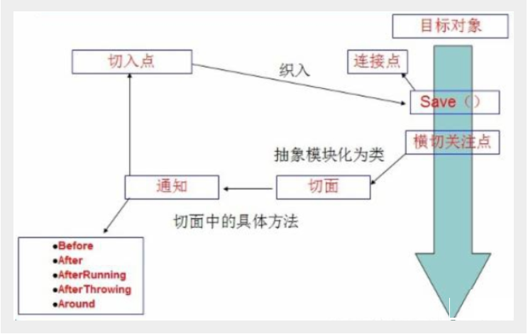
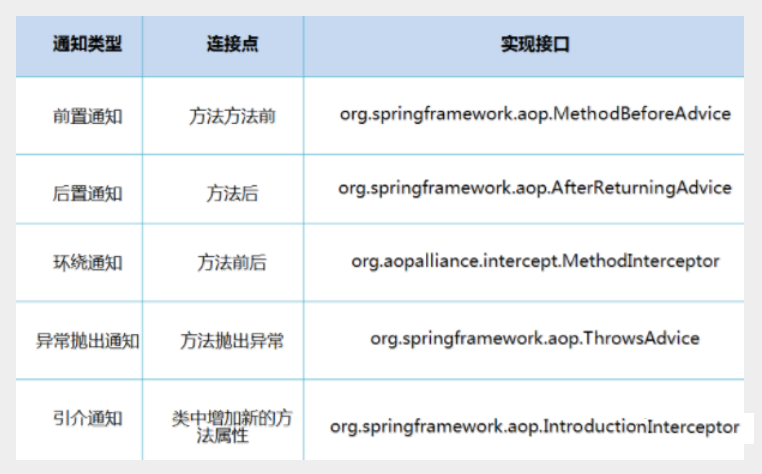
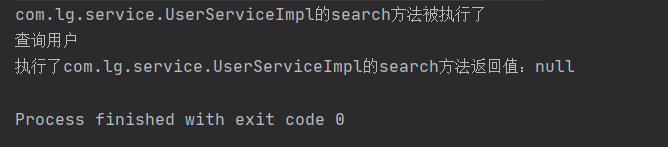
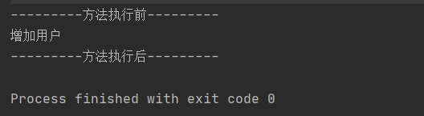
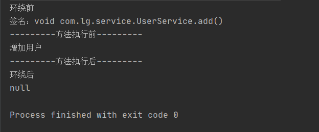

AOP
代理模式，是AOP的基础，一定要先搞懂它
什么是AOP
AOP（Aspect Oriented Programming）意为：面向切面编程，通过预编译方式和运行期动态代理实现程序功能的统一维护的一种技术。AOP是OOP的延续，是软件开发中的一个热点，也是Spring框架中的一个重要内容，是函数式编程的一种衍生范型。利用AOP可以对业务逻辑的各个部分进行隔离，从而使得业务逻辑各部分之间的耦合度降低，提高程序的可重用性，同时提高了开发的效率。

AOP在Spring中的作用
提供声明式事务；允许用户自定义切面
以下名词需要了解下：
- 横切关注点：跨越应用程序多个模块的方法或功能。即是，与我们业务逻辑无关的，但是我们需要关注的部分，就是横切关注点。如日志 , 安全 , 缓存 , 事务等等 ….
- 切面（ASPECT）：横切关注点 被模块化 的特殊对象。即，它是一个类。
- 通知（Advice）：切面必须要完成的工作。即，它是类中的一个方法。
- 目标（Target）：被通知对象。
- 代理（Proxy）：向目标对象应用通知之后创建的对象。
- 切入点（PointCut）：切面通知 执行的 “地点”的定义。
- 连接点（JointPoint）：与切入点匹配的执行点。

SpringAOP中，通过Advice定义横切逻辑，Spring中支持5种类型的Advice:

即 Aop 在 不改变原有代码的情况下 , 去增加新的功能 .
使用Spring API 实现
【重点】使用AOP织入，需要导入一个依赖包！
<!-- https://mvnrepository.com/artifact/org.aspectj/aspectjweaver -->
<dependency>
<groupId>org.aspectj</groupId>
<artifactId>aspectjweaver</artifactId>
<version>1.9.4</version>
</dependency>
第一种方式
通过 Spring API 实现
首先编写我们的业务接口和实现类
public interface UserService {
public void add();
public void delete();
public void update();
public void search();
}
public class UserServiceImpl implements UserService{
@Override
public void add() {
System.out.println("增加用户");
}
@Override
public void delete() {
System.out.println("删除用户");
}
@Override
public void update() {
System.out.println("更新用户");
}
@Override
public void search() {
System.out.println("查询用户");
}
}
然后去写我们的增强类 , 我们编写两个 , 一个前置增强 一个后置增强
public class Log implements MethodBeforeAdvice {
//method : 要执行的目标对象的方法
//objects : 被调用的方法的参数
//Object : 目标对象
@Override
public void before(Method method, Object[] objects, Object o) throws Throwable {
System.out.println( o.getClass().getName() + "的" + method.getName() + "方法被执行了");
}
}
public class AfterLog implements AfterReturningAdvice {
//returnValue 返回值
//method被调用的方法
//args 被调用的方法的对象的参数
//target 被调用的目标对象
@Override
public void afterReturning(Object returnValue, Method method, Object[] args, Object target) throws Throwable {
System.out.println("执行了" + target.getClass().getName()
+"的"+method.getName()+"方法,"
+"返回值："+returnValue);
}
}
最后去spring的文件中注册 , 并实现aop切入实现 , 注意导入约束 .
<?xml version="1.0" encoding="UTF-8"?>
<beans xmlns="http://www.springframework.org/schema/beans"
xmlns:xsi="http://www.w3.org/2001/XMLSchema-instance"
xmlns:aop="http://www.springframework.org/schema/aop"
xsi:schemaLocation="http://www.springframework.org/schema/beans
http://www.springframework.org/schema/beans/spring-beans.xsd
http://www.springframework.org/schema/aop
http://www.springframework.org/schema/aop/spring-aop.xsd">
<!--注册bean-->
<bean id="userService" class="com.lg.service.UserServiceImpl"/>
<bean id="log" class="com.lg.log.Log"/>
<bean id="afterLog" class="com.lg.log.AfterLog"/>
<!--aop的配置-->
<aop:config>
<!--切入点 expression:表达式匹配要执行的方法-->
<aop:pointcut id="pointcut" expression="execution(* com.lg.service.UserServiceImpl.*(..))"/>
<!--执行环绕; advice-ref执行方法 . pointcut-ref切入点-->
<aop:advisor advice-ref="log" pointcut-ref="pointcut"/>
<aop:advisor advice-ref="afterLog" pointcut-ref="pointcut"/>
</aop:config>
</beans>
测试
public class MyTest {
@Test
public void test(){
ApplicationContext context = new ClassPathXmlApplicationContext("beans.xml");
UserService userService = (UserService) context.getBean("userService");
userService.search();
}
}
Aop的重要性 : 很重要 . 一定要理解其中的思路 , 主要是思想的理解这一块 .
Spring的Aop就是将公共的业务 (日志 , 安全等) 和领域业务结合起来 , 当执行领域业务时 , 将会把公共业务加进来 . 实现公共业务的重复利用 . 领域业务更纯粹 , 程序猿专注领域业务 , 其本质还是动态代理 .
输出结果如下：
第二种方式
自定义类来实现Aop
目标业务类不变依旧是userServiceImpl
第一步 : 写我们自己的一个切入类
public class DiyPointcut {
public void before(){
System.out.println("---------方法执行前---------");
}
public void after(){
System.out.println("---------方法执行后---------");
}
}
去spring中配置
<!--第二种方式自定义实现-->
<!--注册bean-->
<bean id="diy" class="com.lg.config.DiyPointcut"/>
<!--aop的配置-->
<aop:config>
<!--第二种方式：使用AOP的标签实现-->
<aop:aspect ref="diy">
<aop:pointcut id="diyPonitcut" expression="execution(* com.lg.service.UserServiceImpl.*(..))"/>
<aop:before pointcut-ref="diyPonitcut" method="before"/>
<aop:after pointcut-ref="diyPonitcut" method="after"/>
</aop:aspect>
</aop:config>
测试：
public class MyTest {
@Test
public void test(){
ApplicationContext context = new ClassPathXmlApplicationContext("beans.xml");
UserService userService = (UserService) context.getBean("userService");
userService.add();
}
}

第三种方式
使用注解实现
第一步：编写一个注解实现的增强类
package com.lg.config;
import org.aspectj.lang.ProceedingJoinPoint;
import org.aspectj.lang.annotation.After;
import org.aspectj.lang.annotation.Around;
import org.aspectj.lang.annotation.Aspect;
import org.aspectj.lang.annotation.Before;
@Aspect
public class AnnotationPointcut {
@Before("execution(* com.lg.service.UserServiceImpl.*(..))")
public void before(){
System.out.println("---------方法执行前---------");
}
@After("execution(* com.lg.service.UserServiceImpl.*(..))")
public void after(){
System.out.println("---------方法执行后---------");
}
@Around("execution(* com.lg.service.UserServiceImpl.*(..))")
public void around(ProceedingJoinPoint jp) throws Throwable {
System.out.println("环绕前");
System.out.println("签名:"+jp.getSignature());
//执行目标方法proceed
Object proceed = jp.proceed();
System.out.println("环绕后");
System.out.println(proceed);
}
}
第二步：在Spring配置文件中，注册bean，并增加支持注解的配置
<!--第三种方式:注解实现-->
<bean id="annotationPointcut" class="com.lg.config.AnnotationPointcut"/>
<aop:aspectj-autoproxy/>
aop:aspectj-autoproxy：说明
通过aop命名空间的<aop:aspectj-autoproxy />声明自动为spring容器中那些配置@aspectJ切面的bean创建代理，织入切面。当然，spring 在内部依旧采用AnnotationAwareAspectJAutoProxyCreator进行自动代理的创建工作，但具体实现的细节已经被<aop:aspectj-autoproxy />隐藏起来了
<aop:aspectj-autoproxy />有一个proxy-target-class属性，默认为false，表示使用jdk动态代理织入增强，当配为<aop:aspectj-autoproxy poxy-target-class="true"/>时，表示使用CGLib动态代理技术织入增强。不过即使proxy-target-class设置为false，如果目标类没有声明接口，则spring将自动使用CGLib动态代理。

转载请注明来源，欢迎对文章中的引用来源进行考证，欢迎指出任何有错误或不够清晰的表达。可以在下面评论区评论，也可以邮件至 1589631311@qq.com